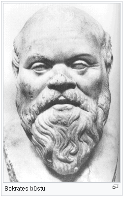
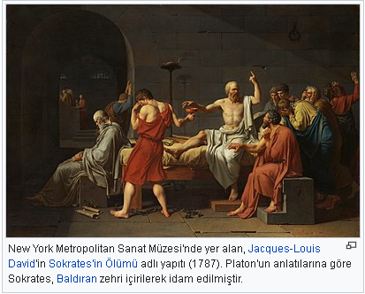

Sokrates
Sokrates (Grekçe: Σωκράτης, Grekçe telaffuz: [soˈkra.tis]; MÖ 469; Atina - MÖ 399, Atina), Antik Yunan filozofudur. Heykeltıraş Sophroniskos'un ve Ebe Fenarete'nin oğludur. Yunan felsefesinin kurucularındandır.
Özel yaşamına ilişkin fazla bir şey bilinmemekle beraber Sokrates; Platon ve Ksenophon’a kadar uzanan bir geleneğe göre kendisine üç çocuk veren Ksanthippi ile evlidir. Platon ve Ksenophon’un çizdiği portreye göre basık burunlu, patlak gözlü, sarkık dudaklı ve göbeklidir. Alçakgönüllü alışkanlıkları ve felsefeden başka bir uğraşı olmadığı bilinen Sokrates, başta öğrencisi Platon olmak üzere Yunan gençleri üzerinde giderek kendisini taklit etmeye varan derecede yükselen bir etki yaratır. Onun gibi yalın ayak yürürler. Hatta bu grup özentisini alaya almak için Aristophanes Kuşlar adlı komedyasında bir terim icat eder. Bu terim Esokraton’dur. Uzun saçlı olurlar, açlık çekerler, Sokrateslik taslayanlardır. Ahlak felsefesinin kurucusu olarak kabul edilen Sokrates’in yaşamının en belirgin olaylarından biri MÖ 399 yılında hakkında açılan davadır. Platon'un Sokrates'in Savunması adlı eserinde anlattığı kadarıyla Sokrates, şehrin tanrılarına inanmamak, onların yerine başka tanrılar koymak ve böylece gençliği zehirlemekle suçlanır. Sokrates bu suçlamalar sonucunda ölüme mahkûm edilir. Sokrates, yazılı bir kaynak bırakmamıştır. Yaşamı ve düşünceleri ile ilgili bilgiler Aristophanes gibi çağdaş yazarlar, Platon ve Ksenophon gibi ardıllarının yazdıkları ve Sokrates’in ölümünden on beş yıl sonra dünyaya gelen Aristoteles’in dolaylı anlatımlarıyla günümüze ulaşmıştır.
Sokrates'te felsefi başlangıç

Sokrates'in felsefi yaşamına başlangıçlık eden olay Delphoi Tapınağı ziyaretidir.[kaynak belirtilmeli]
Sokrates felsefesinin ana temalarını ele alan başlıca kaynak Sokrates'in Savunması adlı diyalogdur. Bu diyalog Sokrates hakkında açılan dava sonrasında Platon tarafından kaleme alınan bir felsefi başkaldırıdır. Bu eser, Sokrates'in felsefi yaklaşımı uyarınca sürdürdüğü yaşamını sergiler. Sokrates yaşam tarzını ve yaşam tarzı nedeniyle sahip olduğu güçlü düşmanlıkları sergilemek amacıyla dostu Khairephon’un Delphoi Tapınağı kâhini Pythies’e kendisi ile ilgili ziyaretini aktarmayı gerek görür.[kaynak belirtilmeli] Khairephon, kâhine Sokrates’ten daha bilge birisinin bulunup bulunmadığını sorduğunda kâhin, ondan daha bilge birisinin bulunmadığını söyler. Bu bilgiyi alan Sokrates önce şüpheye düşer, çünkü hiçbir şey bilmediğinin farkındadır. Ama tanrı yalan söylemeyeceği için kâhinin sözlerinin doğruluğundan şüphe etmemek durumundadır. Böylece söz konusu kehanetin, çözülmesi gereken bir bilmece olduğunu düşünerek araştırmaya koyulur. Önce adı bilgeye çıkan politikacıya, sonra ozanlara, daha sonra da sahip oldukları Sophia ile ünlü olan ustaların ve zanaatkârların yanına gider. Onlara sorduğu sorularla, onların bilge olmadıklarını kavrar. Sokrates bunların cehaletin pençesinde kıvrandıklarını fark eder. Bu kişiler, hem bilmedikleri şeyleri bildiklerini sanmaktadırlar hem de neleri bilmediklerinin farkında değillerdir. Oysa cehaletten daha büyük bir kötülük yoktur. Sokrates bu kişilerden farklı olarak, bilmediğini bilir; tam da bu noktada o kişilerden daha bilge olmaktadır. Yani Sokrates kendi cehaletinin farkında olmak gibi insani bilgeliğe sahiptir. Yani Sokrates kendini bilmekte ve kendini tanımaktadır.
Sokrates, kâhinin söylediği sözlerin gerçek anlamını bulmak için uyguladığı sorgulama sonunda Pythies'in ne demek istediğini anlamıştır. Onların arasında en bilge olduğu doğru bir yargıdır. Çünkü kendisi hiçbir şey bilmediğinin farkındadır. Sokrates böylece –bilmediğini bildiğini sanan- insanlarla, gerçek bilginin tek sahibi olan tanrılar arasında aracı durumundadır. Bu konum aslında Platon'un Lysis ve Şölen adlı eserlerinde belirttiği gibi, filozofun konumudur; zaten filozof kelimesi de Yunanca philei ve sophia kelimelerinin yan yana gelmesi ile oluşturmuştur. Bu kelime başta "bilgi ve bilgelik dostu" sonra ise "bilgiye can veren, onu sorgulayan" anlamına gelmektedir. Bunun ön koşulu da bilgisizliğin bilincinde olmaktır.
Sokrates’in kendini tanı ilkesinin başlıca sebebi; her kişinin yaratılıştan iyi olduğu görüşünden gelir.[kaynak belirtilmeli] Sokrates'in ahlakçı akılcılığı buna denk gelmektedir.
Sokrates’in diyalektik uslamlama yöntemi
Kehanet anlatısı, genellikle Sokrates’in, bilgelikleriyle ünlenenlere yöneltip onları bunalttığı soruları akla getirir. Bu tür yaklaşımlar "çürütme" (elenchos) denen belli bir kalıp içerisinde sergilenirler. Bu yöntem felsefe tarihinin ilk yöntemi olması bakımından son derece önemlidir. Eski Yunancada "sınamadan geçirmek" ya da "çürütme" anlamına gelen elenchos yöntemi, doğruluğundan şüphe duyulmayan bir sava karşı yöneltilen çeşitli sorularla, yapılan açıklamalarla, savın kapsamının olabildiğince genişletilmesiyle, en sonunda savın kendi içinde taşıdığı çelişki ve tutarsızlıkların kanıtlanmasıyla doğruluk savlarının çürütülmesinin amaçlandığı düşünsel diyalektik bir süreçten oluşmaktadır. Sokrates tarzı bu çürütme şu aşamalardan oluşur:
Yanıtlayan, çürütmenin amacını oluşturacak p önermesini savunur;
Sokrates akıl yürütmenin ürünü q ve r önermeleri üzerinde yanıtlayanla tartışmasız hemfikir olur;
Sokrates’i yanıtlayana q ve r önermelerinden ancak karşıt –p önermesine ulaşacağını kanıtlar ;
Sokrates bu noktada p’nin yanlış, karşıt p’nin doğru olduğunun gösterildiğini ileri sürer.

Sokrates’e göre çürütme uygulaması o denli önemlidir ki Savunma'da bunun felsefeyle aynı şey olduğunu savunur. Filozofça yaşamanın insanın kendisini ve başkasını sürekli sınamak olduğunu açıklar (28e, 29c-d). Bu anlamda Sokrates’in diyalektik uslamlama yönteminin amacı insanların iyiye, güzele, erdeme yönelik sürekli bir felsefe arayışı içinde olmalarının sağlanmasıdır. Diyalektik yöntemde yanıt arayan hemen bütün sorular, "Güzel nedir?", "Bilgi nedir?", "Zaman nedir?" gibi ne?-lik bildiren bir şeyin özünü ya da doğasını bilmeye yönelik ana soru yapısından türerler. Sokrates karşılıklı konuşmalardan yola çıkarak yüzeysel bilginin, bir kavramı tanımlatmayı, tanıtlatmayı amaçlayan sorularla diyaloğu istenen doğrultuda yönlendirir. Bu karşılıklı konuşmalarda konuşmacıların söylediklerinde bulunan tutarsızlıklar ve çelişkiler ortaya çıkarılarak yüzeysel bilginin, en önemlisi de doğru diye bilinen sanıların bırakılmasını sağlamış olacaktır.
Diyalektik yönteminin en belirgin örnekleri Kriton ile Lysis diyaloglarıdır. Sokrates’in uyguladığı biçimiyle bu yöntem bilginin bulunmaktan çok hep aranması gereken bir şey olarak görüldüğünün başlıca kanıtıdır.
Sokrates öldükten sonra "Sokratik Diyaloglar" edebiyatı ortaya çıkmıştır. Diyaloglar arasında ilk sırayı Platon’un yazdığı diyaloglar alır. Platon; Sokrates'in Savunması, Kriton, Phaidon, Şölen (Symposion), Theaitetos, Timaeos, Lakhes, Euthyphron adlı diyaloglarında Sokrates’in portresini sergilemiştir. İkinci sırada ise Ksenophon'un Apomnemoneumata adlı yapıtı yer alır.
Sokrates’in kişiliği üzerine birbirine karşıt görüşler ortaya atılmıştır. Platon’a göre dengeli bir kişi olan Sokrates çağdaşı Spintharos’a göre sert mizaçlı, nefsine hâkim birisidir. Fakat Sokrates’e karşı bir saldırı da vardır: Aristophanes'in MÖ 423 yılında sergilediği Bulutlar adlı komedyasında Sokrates, sözcüklerle oynayan, öğretileri ile ahlakı ve devleti baltalayan; gençleri babalarıyla, devletin otoritesini sorgulamaya yönelten bir sofist olarak canlandırılarak eleştirilmiştir.
Ayrıca Sokrates ile ilgili diyaloglarda Sokrates’in içindeki tanrısal sesten (daimon) bahsedilir. Bu güç ona ne gibi davranışlardan kaçınması gerektiği konusunda ilham vermektedir.
Sokrates’i Kant, "aklın ideali", Hegel, "bir insanlık kahramanı, felsefesini yazmayan ama yaşayan gerçek bir filozof" olarak tanımlar. Nietzsche ise tersine, onu, ölüm korkusu nedir bilmeyen, yaşayan biri olarak değil de salt akıl olarak ölen ve hayatın içgüdüsünden tamamıyla kopmuş bir "canavar" olarak tasvir eder.
Sokrates'e ait yazılı bir eser günümüze ulaşmamıştır. Bu nedenle tüm öğretimini sözel olarak yaptığı yargısına varılmaktadır. Sokrates hakkındaki bilgiler başkalarının aracılığı ile günümüze kadar gelmiştir. Bugün fiilen sahip olduğumuz eserleri yazmış olan başlıca filozof Platon’dur. Platon, Sokrates’in öğrencisidir. Sokrates’e ilişkin bilgilerin büyük çoğunluğu Platon’un yazılarından elde edilmektedir. Platon Sokrates’in anısını canlı tutmak için onu ve onun öğretilerini anlatan yazılar yazmıştır.
Sokrates’in ruhunu yaşatmak, Platon için, Sokrates’in yaptığı tarzda felsefe yapmak anlamına gelmektedir. Platon, Sokrates öldüğünde otuz bir yaşındadır. Sokrates öldükten sonra MÖ 4. yüzyılın ilk yarısında Atina’nın ünlü okulu olan ve bugünkü modern üniversitenin ilk örneği sayılabilecek Akademia’yı kurmuştur ve eserlerini orada yazmıştır.
Sokratesçi okullar
Yunan felsefesinin en büyük filozofu Sokrates’in ölümünün ardından onun anısını canlı tutmak için eserler kaleme alındığı gibi bazı okullar da kurulmuştur. Bu kuruluşların hepsi Sokrates’in düşünsel anlamda gerçek izleyicileri olma savıyla kurulmuştur. Bu okullar arasında "Megara okulu", "Kinikler okulu", "Kirene okulu", "Elis-Eteria okulu" sayılabilir. Bu okullar, Sokrates’in, gerek kişilik özelliklerinden, gerekse düşüncelerinden çok derin biçimde etkilenmişlerdir.
MÖ 4. yüzyılın başlarında Sokrates’in ilk öğrencilerinden Megaralı Eukleides, Megara Okulu’nu kurmuştur. Bu okul felsefedeki yerini daha çok Aristoteles eleştirileri ve mantık alanında yaptığı katkılarla belirlemiştir. Atinalı Antisthenes ve Sinoplu Diogenes’in öncülüğünü ettiği bir diğer Sokratesçi kuruluş ise Kinik Okulu’dur. Bu okul bireyin erdem ile mutluluğa ulaşabilmesi için kendi kendiyle yetinip, tüm yapay gereksinimlerinden sıyrılması gerektiğini savunur. Aristippos tarafından kurulan Kirene Okulu ise Kinik Okulu ile taban tabana zıt düşünceleri savunur. Sokrates’in sürekli sözünü ettiği erdem üstüne kurulu mutluluğun, tat almada, bütün haz yaşantısında olduğu düşünülmektedir. Kirene Okulu’nun savunduğu bu temel görüş "haz" anlamına gelen Yunancadaki "hedone" sözcüğünden türeyerek "hazcılık" (hedonizm) diye anılan felsefe öğretisinin de ilk örneğidir. Elis-Eretria Okulu ise Sokrates’in ölümünün hemen ardından öğrencisi Elisli Phaidon tarafından kurulmuştur. Sokrates’in izinden giden tüm okullar gibi bu okul da ahlak felsefesini baş köşeye yerleştirmiştir. Bu felsefe okulu aynı zamanda Sokrates’in soylu yaşamını, bu yaşamdan alınacak dersleri ve insan yaşamında felsefenin yerini vurgulamak üzere kurulmuştur.
Kaynakça
- Felsefe Tarihine Giriş, Ahmet Cevizci, Paradigma yayınları.
- Felsefe Tarihi, Macit Gökberk, Remzi Kitabevi
- Batı Felsefesi Tarihi, Bertrand Russell, çeviren:M.Sencer
- Felsefe Tarihinin Sorunları, Theodor Oizermann, çeviren:Celal A.Kanat
- Düşünce Tarihi, Afşar Timuçin,
- Felsefe Tarihinde İnsan Sorunu, Mustafa Günay, Karahan Kitabevi Yayınları, 2010.
- Doğa Tasarımı, R. G. Collingwood, İmge Yayınları, 1999